Прошивка и настройка приборных панелей LADA в Казани
Активация заводских функций приборных панелей автомобилей
LADA в Казани и пригороде. Работаю аккуратно, без вмешательства в систему управления двигателем.
Granta / Kalina 2 — что активируется
Отображение температуры двигателя (ДТОЖ)
Отображение температуры наружного воздуха (ДТНВ)
Дополнительные статистические данные (такие как время в пути, средняя скорость, расход топлива за поездку)
Как проходит работа
Проверка ревизии и текущей прошивки панели
Резервное копирование прошивки и дампа данных
Прошивка и установка панели
Проверка результата при Вас
Работа занимает 20 – 30 минут под ключ со снятием, установкой панели, бэкапом данных и проверкой результата
Важно знать
Используются только заводские прошивки
Не изменяется конструкция и электрика ТС
Не вмешиваюсь в систему управления двигателем ЭБУ
Работа не связана с одометром и экологическими нормами
Поддерживаемые панели
LADA Granta 2190 — версии 053, 060, 076, 087, 090 и выше (не подходит для FL)
LADA Kalina 2192 — версии от 007
❌ Не прошиваю пересвеченные, кастомные панели и панели от FL.
Примеры работ
❮
❯
Granta FL — активация круиз-контроля
Сброс приборной панели Лада Granta FL для активации круиз-контроля и ограничителя скорости
Внимание
Авто должно быть с ABS либо предварительно прошит ЭБУ
Выполняю только сброс панели для определения подрулевого и активации круиз-контроля (без вмешательства в ЭБУ)
Вы платите только за результат: панель распознаёт переключатель,
реагирует на кнопки, настройки БК переключаются, при тесте панели отображаются значки круиз-контроля и ограничителя скорости.
Заводом выпускались разные версии панелей и ЭБУ.
На части автомобилей требуется предварительная активация функции круиз-контроля на уровне ЭБУ
(особенно 2022 – 2023 г.в.).
Примеры работ
❮
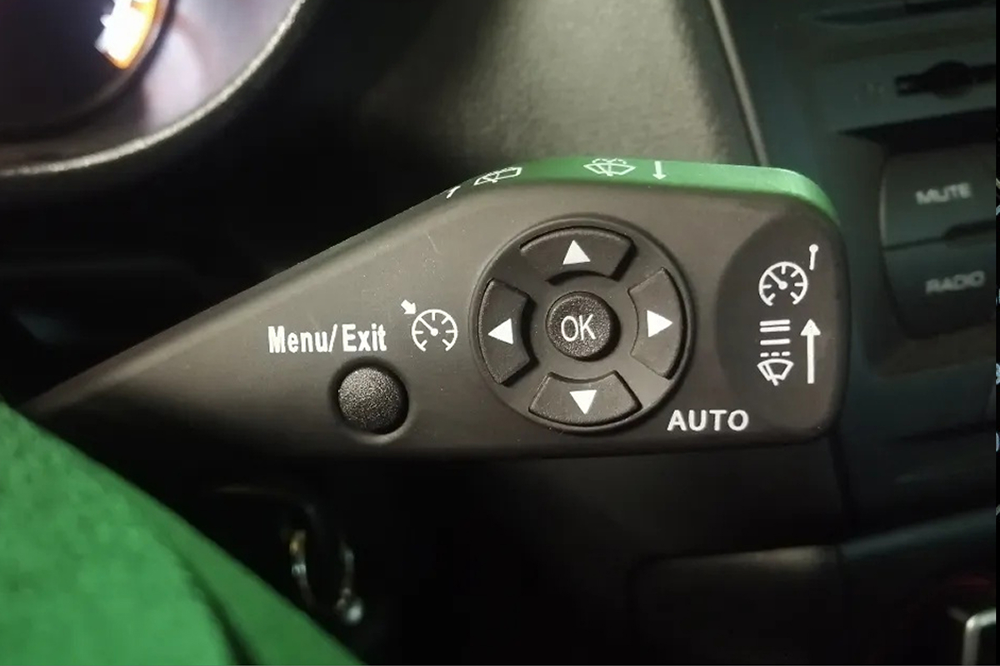
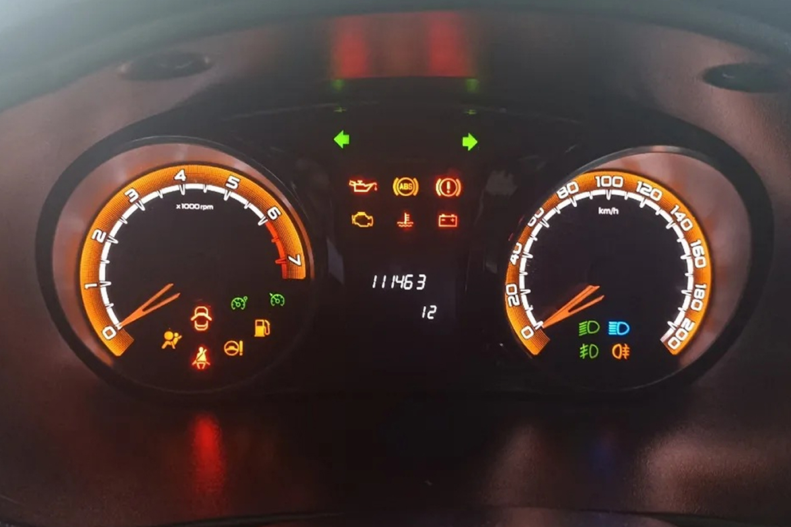
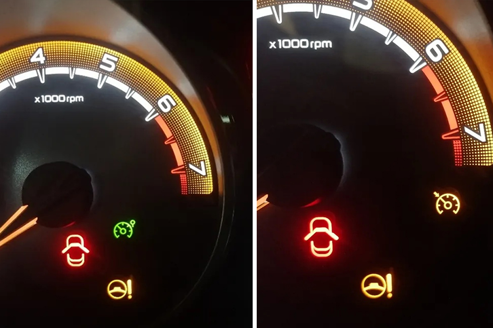
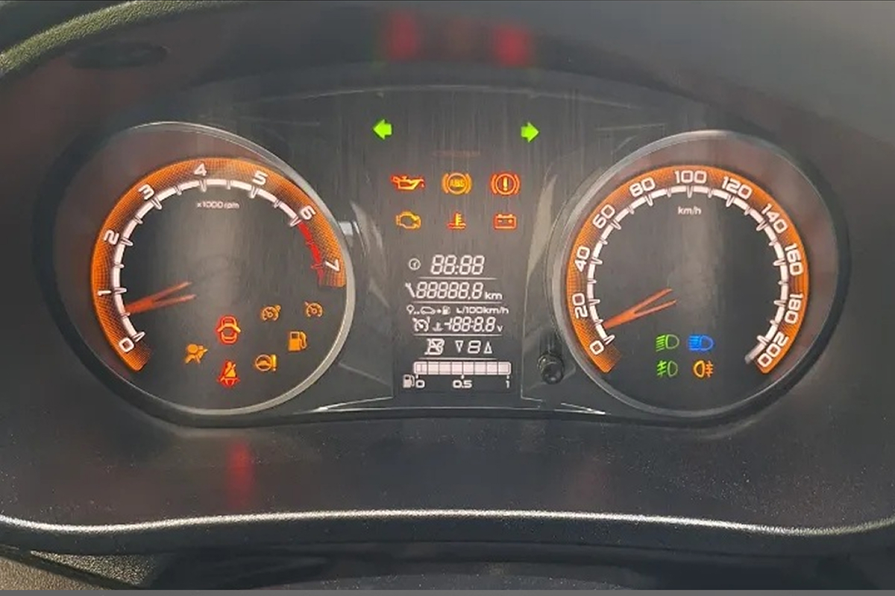
❯
LADA Vesta — реальная температура двигателя
Включение отображения реальной температуры двигателя
на приборной панели Lada Vesta 1G (на седан и универсал SW с завода стрелка работает ступенчато и показывает только 90°C).
Активация заводской функции линейного отображения реальной температуры двигателя
Настройка штатных функций (таких как отключение авто очистки стеклоочистителем при включении задней передачи)
Внимание
Только Vesta 1G (2015 – 2020), для Vesta NG не подходит


 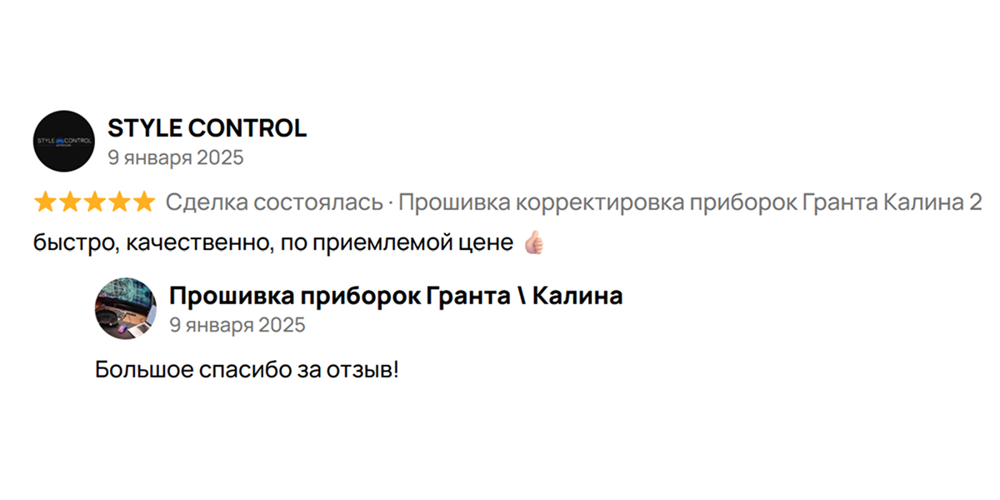
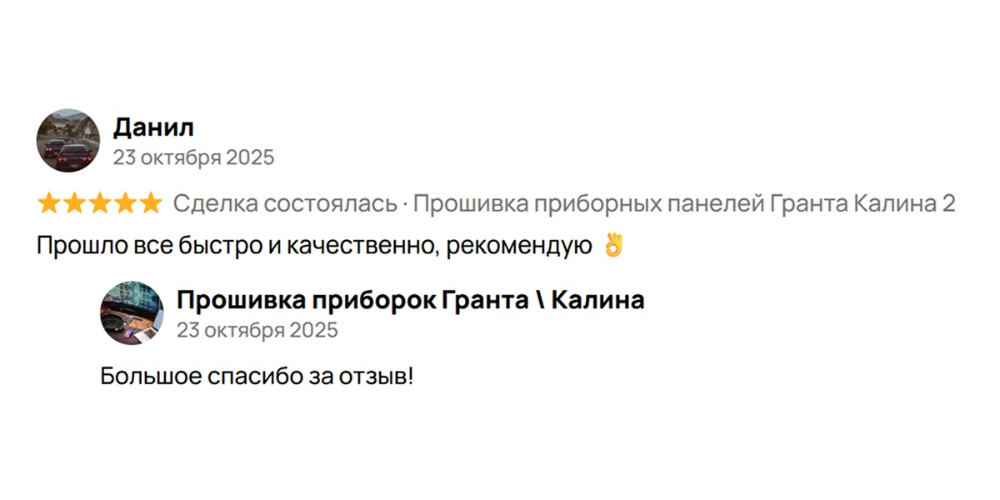
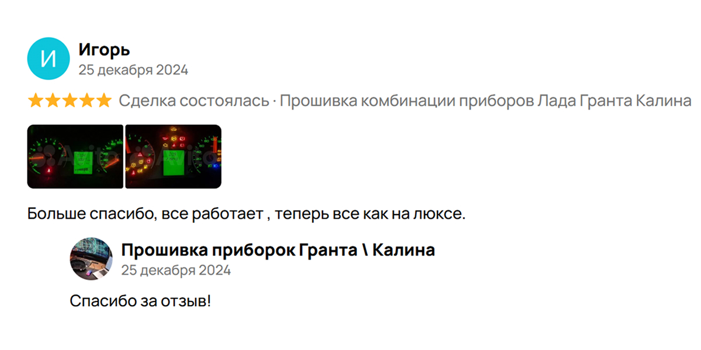
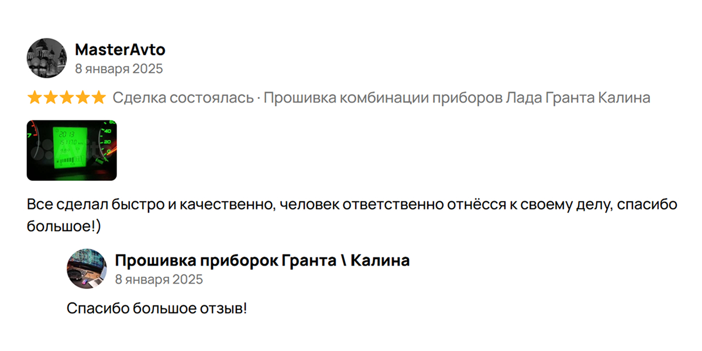
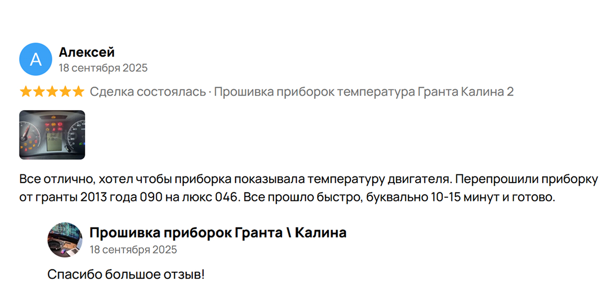
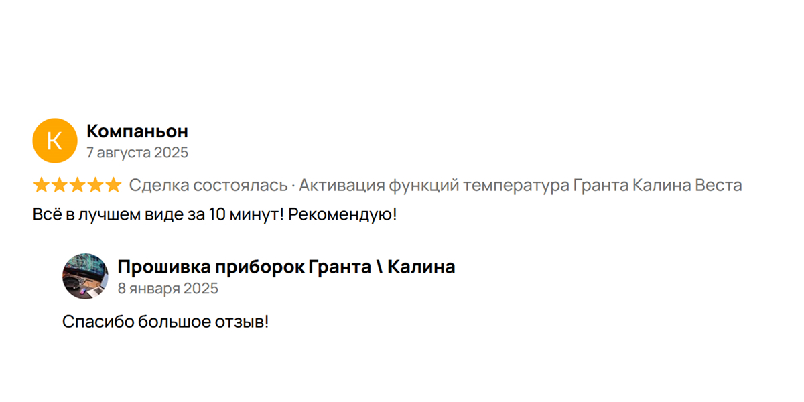
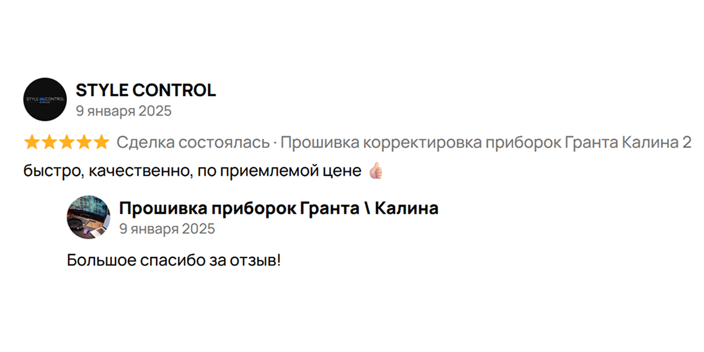
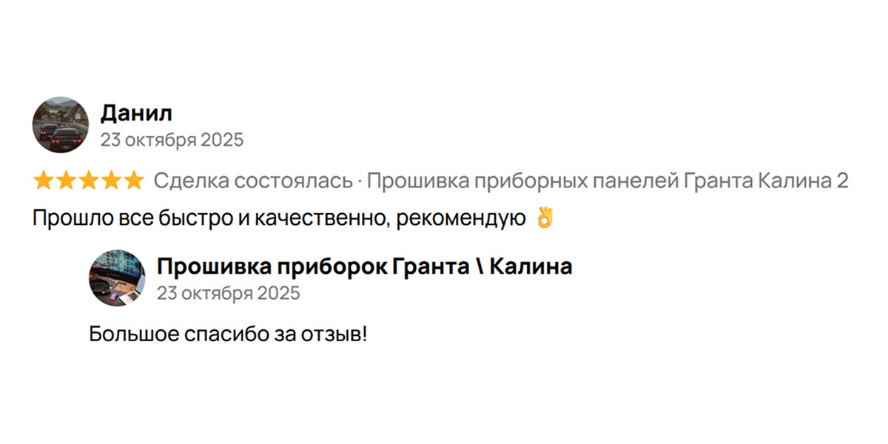
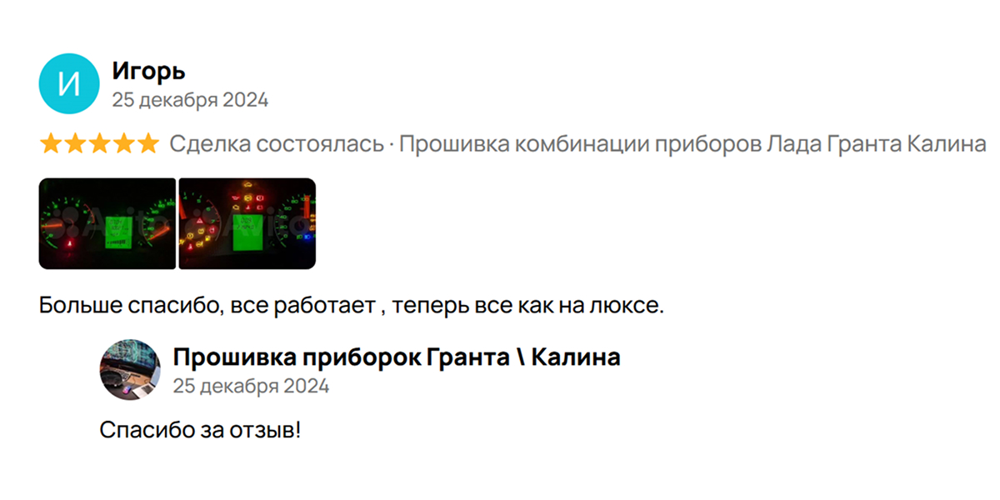
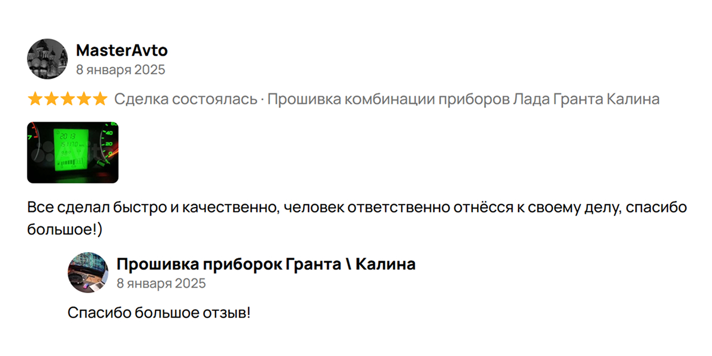
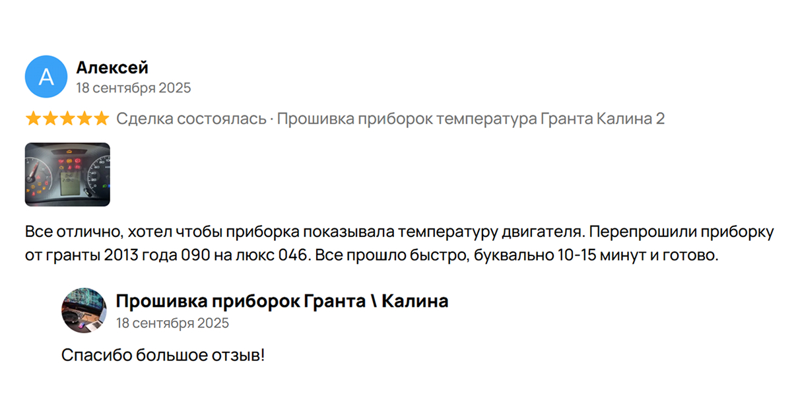
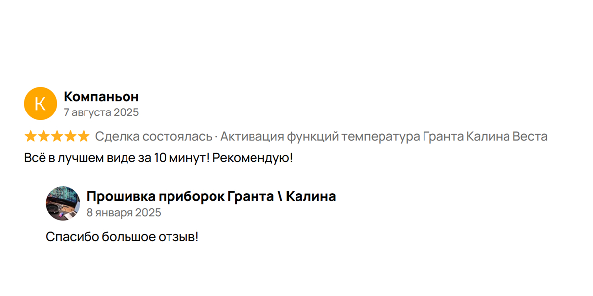